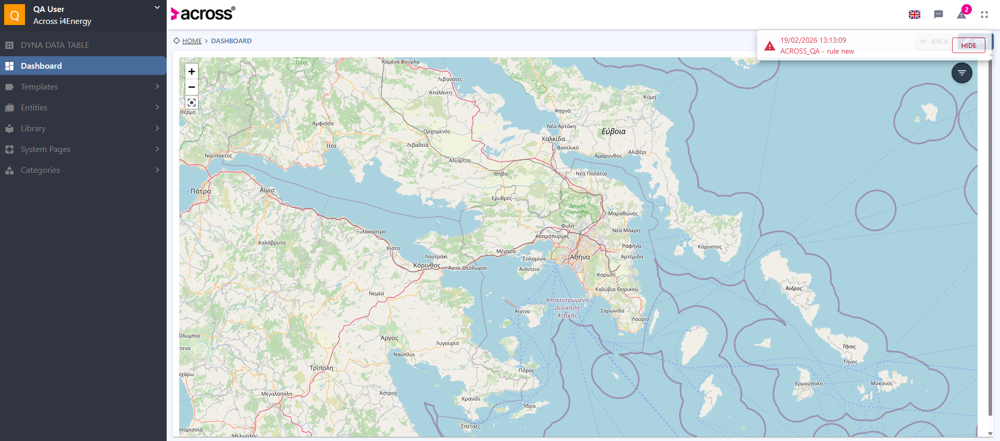

-
Login
1:12:37 PM / 00:00:09:841 Pass
Login
02.19.2026 1:12:37 PM 02.19.2026 1:12:47 PM 00:00:09:841 · #test-id=1PassTC-01 Login With Valid CredentialsGiven Navigate to Testing EnvironmentWhen Login with QA user credentialsThen Login should be successfully -
Logout
1:12:47 PM / 00:00:25:538 Fail
Logout
02.19.2026 1:12:47 PM 02.19.2026 1:13:13 PM 00:00:25:538 · #test-id=8FailTC-02 Logout From ApplicationGiven Navigate to Testing EnvironmentWhen Login with QA user credentialsThen Login should be successfullyAnd Go to MyAccountAnd Click Logout ButtonStep skippedThen User Should Logout SuccessfullyStep skippedSteps._Hooks.after(io.cucumber.java.Scenario)screenshot name -
Customer Menu Creation
1:13:13 PM / 00:00:15:356 Fail
Customer Menu Creation
02.19.2026 1:13:13 PM 02.19.2026 1:13:28 PM 00:00:15:356 · #test-id=18FailTC-03 Customer Menu Creation ScenarioGiven Navigate to Testing EnvironmentWhen Login with QA user credentialsThen Login should be successfullyAnd User clicks following ItemsdownArrow adminView And User clicks following dynamic elementsclick Customer Menu click Edit click Create And User enters data to necessary areasname TestMenu Step skippedAnd User changes languages of relevant fieldsenglish greek Step skippedAnd User enters data to necessary areasname TestMenuEL Step skippedAnd User selects necessary areasmenuIcon iconABC Step skippedAnd User press the Esc Button on Keyboard Times1 Step skippedAnd User selects necessary areasmenuFeature menuSystemPages pageDesigner Step skippedAnd User press the Esc Button on Keyboard Times1 Step skippedAnd User clicks following dynamic elementsclick Confirm click Save click Yes Step skippedThen User should see verify messagesuccess success Step skippedSteps._Hooks.after(io.cucumber.java.Scenario) -
Customer Menu Editing
1:13:28 PM / 00:00:00:009 Fail
Customer Menu Editing
02.19.2026 1:13:28 PM 02.19.2026 1:13:28 PM 00:00:00:009 · #test-id=36FailTC-04 Customer Menu Editing ScenarioGiven Navigate to Testing EnvironmentWhen Login with QA user credentialsStep skippedThen Login should be successfullyStep skippedAnd User clicks following ItemsdownArrow adminView Step skippedAnd User clicks following dynamic elementsclick Customer Menu click Edit click TestMenu Step skippedAnd User enters data to necessary areasname TestMenuEdit Step skippedAnd User changes languages of relevant fieldsenglish greek Step skippedAnd User enters data to necessary areasname TestMenuEditEL Step skippedAnd User clicks following dynamic elementsclick Confirm click Save click Yes Step skippedThen User should see verify messagesuccess success Step skippedSteps._Hooks.after(io.cucumber.java.Scenario) -
Customer Menu Deletion
1:13:28 PM / 00:00:00:011 Fail
Customer Menu Deletion
02.19.2026 1:13:28 PM 02.19.2026 1:13:28 PM 00:00:00:011 · #test-id=50FailTC-05 Customer Menu Deletion ScenarioGiven Navigate to Testing EnvironmentWhen Login with QA user credentialsStep skippedThen Login should be successfullyStep skippedAnd User clicks following ItemsdownArrow adminView Step skippedAnd User clicks following dynamic elementsclick Customer Menu click Edit delete TestMenuEdit click Yes click Save click Yes Step skippedThen User should see verify messagesuccess success Step skippedSteps._Hooks.after(io.cucumber.java.Scenario) -
Custom Data Template Creation
1:13:28 PM / 00:00:00:013 Fail
Custom Data Template Creation
02.19.2026 1:13:28 PM 02.19.2026 1:13:28 PM 00:00:00:013 · #test-id=60FailTC-14 Custom Data Template Creation ScenarioGiven Navigate to Testing EnvironmentWhen Login with QA user credentialsStep skippedThen Login should be successfullyStep skippedAnd User clicks following dynamic elementsclick Templates click Custom Data Templates click Create click Info Step skippedAnd User enters data to necessary areasname TestCustomDataTemplateTest description CustomDataTemplateForTest Step skippedAnd User selects necessary areasdeviceCategory Step skippedAnd User clicks following dynamic elementsclick Data Template Cat_1 Step skippedAnd User press the Esc Button on Keyboard Times1 Step skippedAnd User changes languages of relevant fieldsenglish greek Step skippedAnd User enters data to necessary areasname TestCustomDataTemplateTestEL Step skippedAnd User clicks following dynamic elementsclick Structure click Save Step skippedAnd User enters data to necessary areasreason TestCustomDataTemplateCreation Step skippedAnd User clicks following dynamic elementsclick Yes Step skippedThen User should see verify messagesuccess success Step skippedAnd User clicks following dynamic elementsclick Dashboard Step skippedSteps._Hooks.after(io.cucumber.java.Scenario) -
Custom Data Template Editing
1:13:28 PM / 00:00:00:012 Fail
Custom Data Template Editing
02.19.2026 1:13:28 PM 02.19.2026 1:13:28 PM 00:00:00:012 · #test-id=79FailTC-15 Custom Data Template Editing ScenarioGiven Navigate to Testing EnvironmentWhen Login with QA user credentialsStep skippedThen Login should be successfullyStep skippedAnd User clicks following dynamic elementsclick Templates click Custom Data Templates Step skippedAnd User search the itemsearch TestCustomDataTemplateTest Step skippedAnd User clicks following dynamic elementsclick search click TestCustomDataTemplateTest Step skippedAnd User clicks hide button if the alert existhide Step skippedAnd User clicks following Itemsedit Step skippedAnd User edits the record with namedescription CustomDataTemplateForEditTest Step skippedAnd User confirms the selectionsave yes Step skippedThen User should see verify messagesuccess success Step skippedAnd User clicks following dynamic elementsclick Dashboard Step skippedSteps._Hooks.after(io.cucumber.java.Scenario) -
Custom Data Template Deletion
1:13:28 PM / 00:00:00:008 Fail
Custom Data Template Deletion
02.19.2026 1:13:28 PM 02.19.2026 1:13:28 PM 00:00:00:008 · #test-id=95FailTC-16 Custom Data Template Deletion ScenarioGiven Navigate to Testing EnvironmentWhen Login with QA user credentialsStep skippedThen Login should be successfullyStep skippedAnd User clicks following dynamic elementsclick Templates click Custom Data Templates Step skippedAnd User search the itemsearch TestCustomDataTemplateTest Step skippedAnd User clicks following dynamic elementsclick search click delete click Yes Step skippedThen User should see verify messagesuccess success Step skippedAnd User clicks following dynamic elementsclick Dashboard Step skippedSteps._Hooks.after(io.cucumber.java.Scenario) -
Custom Entity Template Editing
1:13:28 PM / 00:00:00:015 Fail
Custom Entity Template Editing
02.19.2026 1:13:28 PM 02.19.2026 1:13:28 PM 00:00:00:015 · #test-id=107FailTC-18 Custom Entity Template Editing ScenarioGiven Navigate to Testing EnvironmentWhen Login with QA user credentialsStep skippedThen Login should be successfullyStep skippedAnd User clicks following dynamic elementsclick Templates click Custom Entity Templates Step skippedAnd User search the itemsearch TestCustomEntityTemplate Step skippedAnd User clicks following dynamic elementsclick search click TestCustomEntityTemplate Step skippedAnd User clicks hide button if the alert existhide Step skippedAnd User clicks following Itemsedit Step skippedAnd User edits the record with namedescription CustomEntityTemplateForTestEdit Step skippedAnd User confirms the selectionsave yes Step skippedThen User should see verify messagesuccess success Step skippedAnd User clicks following dynamic elementsclick Dashboard Step skippedSteps._Hooks.after(io.cucumber.java.Scenario) -
Library Entity Record Creation
1:13:28 PM / 00:00:00:013 Fail
Library Entity Record Creation
02.19.2026 1:13:28 PM 02.19.2026 1:13:28 PM 00:00:00:013 · #test-id=123FailTC-19 Library Entity Record Creation ScenarioGiven Navigate to Testing EnvironmentWhen Login with QA user credentialsStep skippedThen Login should be successfullyStep skippedAnd User clicks following dynamic elementsclick Entities click Library Entities click Library Entity_1 click Create Step skippedAnd User enters data to necessary areasname TestLibraryEntityTest description LibraryEntityForTest Step skippedAnd User selects necessary areasdeviceCategory Step skippedAnd User clicks following dynamic elementsclick Turbine click Wind Turbine Step skippedAnd User press the Esc Button on Keyboard Times1 Step skippedAnd User changes languages of relevant fieldsenglish greek Step skippedAnd User enters data to necessary areasname TestLibraryEntityTestEL Step skippedAnd User changes languages of relevant fieldsenglish greek Step skippedAnd User enters data to necessary areasdescription LibraryEntityForTestEL Step skippedAnd User clicks following dynamic elementsclick save click Yes Step skippedThen User should see verify messagesuccess success Step skippedAnd User clicks following dynamic elementsclick Dashboard Step skippedSteps._Hooks.after(io.cucumber.java.Scenario) -
Library Entity Record Editing
1:13:28 PM / 00:00:00:014 Fail
Library Entity Record Editing
02.19.2026 1:13:28 PM 02.19.2026 1:13:28 PM 00:00:00:014 · #test-id=142FailTC-20 Library Entity Record Editing ScenarioGiven Navigate to Testing EnvironmentWhen Login with QA user credentialsStep skippedThen Login should be successfullyStep skippedAnd User clicks following dynamic elementsclick Entities click Library Entities click Library Entity_1 Step skippedAnd User search the itemsearch TestLibraryEntityTest Step skippedAnd User clicks following dynamic elementsclick search click TestLibraryEntityTest Step skippedAnd User clicks hide button if the alert existhide Step skippedAnd User clicks following Itemsedit Step skippedAnd User edits the record with namedescription TestLibraryEntityForTestEdit Step skippedAnd User confirms the selectionsave yes Step skippedThen User should see verify messagesuccess success Step skippedAnd User clicks following dynamic elementsclick Dashboard Step skippedSteps._Hooks.after(io.cucumber.java.Scenario) -
Library Entity Record Deletion
1:13:28 PM / 00:00:00:013 Fail
Library Entity Record Deletion
02.19.2026 1:13:28 PM 02.19.2026 1:13:28 PM 00:00:00:013 · #test-id=158FailTC-21 Library Entity Record Deletion ScenarioGiven Navigate to Testing EnvironmentWhen Login with QA user credentialsStep skippedThen Login should be successfullyStep skippedAnd User clicks following dynamic elementsclick Entities click Library Entities click Library Entity_1 Step skippedAnd User search the itemsearch TestLibraryEntityTest Step skippedAnd User clicks following dynamic elementsclick search Step skippedAnd User clicks following dynamic elementsclick Name click delete click Yes Step skippedThen User should see verify messagesuccess success Step skippedAnd User clicks following dynamic elementsclick Dashboard Step skippedSteps._Hooks.after(io.cucumber.java.Scenario) -
Instance Entity Record Creation
1:13:28 PM / 00:00:00:033 Fail
Instance Entity Record Creation
02.19.2026 1:13:28 PM 02.19.2026 1:13:28 PM 00:00:00:033 · #test-id=171FailTC-22 Instance Entity Record Creation ScenarioGiven Navigate to Testing EnvironmentWhen Login with QA user credentialsStep skippedThen Login should be successfullyStep skippedAnd User clicks following dynamic elementsclick Entities click Instance Entities click Instance Entity_1 Step skippedAnd User clicks following Itemscreate installation next Step skippedAnd User enters data to necessary areasname TestInstanceEntityTest description InstanceEntityForTest Step skippedAnd User selects necessary areasdeviceCategory Step skippedAnd User clicks following dynamic elementsclick Turbine click Wind Turbine Step skippedAnd User press the Esc Button on Keyboard Times1 Step skippedAnd User changes languages of relevant fieldsenglish greek Step skippedAnd User enters data to necessary areasname TestInstanceEntityTestEL Step skippedAnd User changes languages of relevant fieldsenglish greek Step skippedAnd User enters data to necessary areasdescription InstanceEntityForTestEL Step skippedAnd User clicks following dynamic elementsclick Save Step skippedAnd User enters data to necessary areasreason TestInstanceEntityCreation Step skippedAnd User clicks following dynamic elementsclick Yes Step skippedThen User should see verify messagesuccess success Step skippedAnd User clicks following dynamic elementsclick Dashboard Step skippedSteps._Hooks.after(io.cucumber.java.Scenario) -
Instance Entity Record Editing
1:13:28 PM / 00:00:00:008 Fail
Instance Entity Record Editing
02.19.2026 1:13:28 PM 02.19.2026 1:13:28 PM 00:00:00:008 · #test-id=193FailTC-23 Instance Entity Record Editing ScenarioGiven Navigate to Testing EnvironmentWhen Login with QA user credentialsStep skippedThen Login should be successfullyStep skippedAnd User clicks following dynamic elementsclick Entities click Instance Entities click Instance Entity_1 Step skippedAnd User search the itemsearch TestInstanceEntityTest Step skippedAnd User clicks following dynamic elementsclick search click TestInstanceEntityTest Step skippedAnd User clicks hide button if the alert existhide Step skippedAnd User clicks following Itemsedit Step skippedAnd User edits the record with namedescription TestInstanceEntityForTestEdit Step skippedAnd User clicks following dynamic elementsclick Save Step skippedAnd User enters data to necessary areasreason TestInstanceEntityEdition Step skippedAnd User clicks following dynamic elementsclick Yes Step skippedThen User should see verify messagesuccess success Step skippedAnd User clicks following dynamic elementsclick Dashboard Step skippedSteps._Hooks.after(io.cucumber.java.Scenario) -
Instance Entity Record Deletion
1:13:28 PM / 00:00:00:008 Fail
Instance Entity Record Deletion
02.19.2026 1:13:28 PM 02.19.2026 1:13:28 PM 00:00:00:008 · #test-id=211FailTC-24 Instance Entity Record Deletion ScenarioGiven Navigate to Testing EnvironmentWhen Login with QA user credentialsStep skippedThen Login should be successfullyStep skippedAnd User clicks following dynamic elementsclick Entities click Instance Entities click Instance Entity_1 Step skippedAnd User search the itemsearch TestInstanceEntityTest Step skippedAnd User clicks following dynamic elementsclick search Step skippedAnd User clicks following dynamic elementsclick Name click delete click Yes Step skippedThen User should see verify messagesuccess success Step skippedAnd User clicks following dynamic elementsclick Dashboard Step skippedSteps._Hooks.after(io.cucumber.java.Scenario) -
Instance Entity Record Import From Library Entity Records
1:13:28 PM / 00:00:00:010 Fail
Instance Entity Record Import From Library Entity Records
02.19.2026 1:13:28 PM 02.19.2026 1:13:28 PM 00:00:00:010 · #test-id=224FailTC-25 Instance Entity Record Import From Library ScenarioGiven Navigate to Testing EnvironmentWhen Login with QA user credentialsStep skippedThen Login should be successfullyStep skippedAnd User clicks following dynamic elementsclick Entities click Instance Entities click Instance Entity_1 Step skippedAnd User clicks following ItemsimportButton checkTheElement next installation next Step skippedAnd User enters data to necessary areasname TestImportInstanceEntity description ImportInstanceEntityFromLibraryEntity Step skippedAnd User clicks following dynamic elementsclick save click Save click Yes Step skippedThen User should see verify messagesuccess success Step skippedAnd User clicks following dynamic elementsclick Dashboard Step skippedSteps._Hooks.after(io.cucumber.java.Scenario) -
Imported Instance Entity Record Deletion
1:13:28 PM / 00:00:00:008 Fail
Imported Instance Entity Record Deletion
02.19.2026 1:13:28 PM 02.19.2026 1:13:28 PM 00:00:00:008 · #test-id=237FailTC-26 Imported Instance Entity Record Deletion ScenarioGiven Navigate to Testing EnvironmentWhen Login with QA user credentialsStep skippedThen Login should be successfullyStep skippedAnd User clicks following dynamic elementsclick Entities click Instance Entities click Instance Entity_1 Step skippedAnd User search the itemsearch TestImportInstanceEntity Step skippedAnd User clicks following dynamic elementsclick search Step skippedAnd User clicks following dynamic elementsclick Name click delete click Yes Step skippedThen User should see verify messagesuccess success Step skippedAnd User clicks following dynamic elementsclick Dashboard Step skippedSteps._Hooks.after(io.cucumber.java.Scenario) -
Importing Device To Library Entity Record
1:13:28 PM / 00:00:00:005 Fail
Importing Device To Library Entity Record
02.19.2026 1:13:28 PM 02.19.2026 1:13:28 PM 00:00:00:005 · #test-id=250FailTC-33 Device Import To Library Entity ScenarioGiven Navigate to Testing EnvironmentWhen Login with QA user credentialsStep skippedThen Login should be successfullyStep skippedAnd User clicks following dynamic elementsclick Entities click Library Entities click Library Entity_1 click StableLibraryEntity title Devices Step skippedAnd User clicks following ItemsimportButton Step skippedAnd User clicks following dynamic elementsclick add click Save click Yes Step skippedThen User should see verify messagesuccess success Step skippedAnd User clicks following dynamic elementsclick Dashboard Step skippedSteps._Hooks.after(io.cucumber.java.Scenario) -
Device Deletion In Library Entity
1:13:28 PM / 00:00:00:005 Fail
Device Deletion In Library Entity
02.19.2026 1:13:28 PM 02.19.2026 1:13:28 PM 00:00:00:005 · #test-id=262FailTC-34 Device Deletion In Library Entity ScenarioGiven Navigate to Testing EnvironmentWhen Login with QA user credentialsStep skippedThen Login should be successfullyStep skippedAnd User clicks following dynamic elementsclick Entities click Library Entities click Library Entity_1 click StableLibraryEntity title Devices Step skippedAnd User search the itemsearch StableDevice Step skippedAnd User clicks following dynamic elementsclick search click delete click Yes Step skippedThen User should see verify messagesuccess success Step skippedAnd User clicks following dynamic elementsclick Dashboard Step skippedSteps._Hooks.after(io.cucumber.java.Scenario) -
Instance Entity Record Import From Library Entity Records With Device&Register
1:13:28 PM / 00:00:00:008 Fail
Instance Entity Record Import From Library Entity Records With Device&Register
02.19.2026 1:13:28 PM 02.19.2026 1:13:28 PM 00:00:00:008 · #test-id=274FailTC-36 Instance Entity Record Import From Library With Device&Register ScenarioGiven Navigate to Testing EnvironmentWhen Login with QA user credentialsStep skippedThen Login should be successfullyStep skippedAnd User clicks following dynamic elementsclick Entities click Instance Entities click Instance Entity_1 Step skippedAnd User clicks following ItemsimportButton checkTheElement next installation next Step skippedAnd User enters data to necessary areasname TestImportInstanceEntity description ImportInstanceEntityFromLibraryEntity Step skippedAnd User clicks following ItemssaveIcon importDevices addButton saveIcon Step skippedSteps._Hooks.after(io.cucumber.java.Scenario)
-
org.openqa.selenium.NoSuchSessionException
36 tests
org.openqa.selenium.NoSuchSessionException
36 failedStatus Timestamp TestName Fail 13:13:21 PM And User clicks following dynamic elements Customer Menu Creation.TC-03 Customer Menu Creation Scenario.And User clicks following dynamic elementsFail 13:13:28 PM Steps._Hooks.after(io.cucumber.java.Scenario) Customer Menu Creation.TC-03 Customer Menu Creation Scenario.Steps._Hooks.after(io.cucumber.java.Scenario)Fail 13:13:28 PM Given Navigate to Testing Environment Customer Menu Editing.TC-04 Customer Menu Editing Scenario.Given Navigate to Testing EnvironmentFail 13:13:28 PM Steps._Hooks.after(io.cucumber.java.Scenario) Customer Menu Editing.TC-04 Customer Menu Editing Scenario.Steps._Hooks.after(io.cucumber.java.Scenario)Fail 13:13:28 PM Given Navigate to Testing Environment Customer Menu Deletion.TC-05 Customer Menu Deletion Scenario.Given Navigate to Testing EnvironmentFail 13:13:28 PM Steps._Hooks.after(io.cucumber.java.Scenario) Customer Menu Deletion.TC-05 Customer Menu Deletion Scenario.Steps._Hooks.after(io.cucumber.java.Scenario)Fail 13:13:28 PM Given Navigate to Testing Environment Custom Data Template Creation.TC-14 Custom Data Template Creation Scenario.Given Navigate to Testing EnvironmentFail 13:13:28 PM Steps._Hooks.after(io.cucumber.java.Scenario) Custom Data Template Creation.TC-14 Custom Data Template Creation Scenario.Steps._Hooks.after(io.cucumber.java.Scenario)Fail 13:13:28 PM Given Navigate to Testing Environment Custom Data Template Editing.TC-15 Custom Data Template Editing Scenario.Given Navigate to Testing EnvironmentFail 13:13:28 PM Steps._Hooks.after(io.cucumber.java.Scenario) Custom Data Template Editing.TC-15 Custom Data Template Editing Scenario.Steps._Hooks.after(io.cucumber.java.Scenario)Fail 13:13:28 PM Given Navigate to Testing Environment Custom Data Template Deletion.TC-16 Custom Data Template Deletion Scenario.Given Navigate to Testing EnvironmentFail 13:13:28 PM Steps._Hooks.after(io.cucumber.java.Scenario) Custom Data Template Deletion.TC-16 Custom Data Template Deletion Scenario.Steps._Hooks.after(io.cucumber.java.Scenario)Fail 13:13:28 PM Given Navigate to Testing Environment Custom Entity Template Editing.TC-18 Custom Entity Template Editing Scenario.Given Navigate to Testing EnvironmentFail 13:13:28 PM Steps._Hooks.after(io.cucumber.java.Scenario) Custom Entity Template Editing.TC-18 Custom Entity Template Editing Scenario.Steps._Hooks.after(io.cucumber.java.Scenario)Fail 13:13:28 PM Given Navigate to Testing Environment Library Entity Record Creation.TC-19 Library Entity Record Creation Scenario.Given Navigate to Testing EnvironmentFail 13:13:28 PM Steps._Hooks.after(io.cucumber.java.Scenario) Library Entity Record Creation.TC-19 Library Entity Record Creation Scenario.Steps._Hooks.after(io.cucumber.java.Scenario)Fail 13:13:28 PM Given Navigate to Testing Environment Library Entity Record Editing.TC-20 Library Entity Record Editing Scenario.Given Navigate to Testing EnvironmentFail 13:13:28 PM Steps._Hooks.after(io.cucumber.java.Scenario) Library Entity Record Editing.TC-20 Library Entity Record Editing Scenario.Steps._Hooks.after(io.cucumber.java.Scenario)Fail 13:13:28 PM Given Navigate to Testing Environment Library Entity Record Deletion.TC-21 Library Entity Record Deletion Scenario.Given Navigate to Testing EnvironmentFail 13:13:28 PM Steps._Hooks.after(io.cucumber.java.Scenario) Library Entity Record Deletion.TC-21 Library Entity Record Deletion Scenario.Steps._Hooks.after(io.cucumber.java.Scenario)Fail 13:13:28 PM Given Navigate to Testing Environment Instance Entity Record Creation.TC-22 Instance Entity Record Creation Scenario.Given Navigate to Testing EnvironmentFail 13:13:28 PM Steps._Hooks.after(io.cucumber.java.Scenario) Instance Entity Record Creation.TC-22 Instance Entity Record Creation Scenario.Steps._Hooks.after(io.cucumber.java.Scenario)Fail 13:13:28 PM Given Navigate to Testing Environment Instance Entity Record Editing.TC-23 Instance Entity Record Editing Scenario.Given Navigate to Testing EnvironmentFail 13:13:28 PM Steps._Hooks.after(io.cucumber.java.Scenario) Instance Entity Record Editing.TC-23 Instance Entity Record Editing Scenario.Steps._Hooks.after(io.cucumber.java.Scenario)Fail 13:13:28 PM Given Navigate to Testing Environment Instance Entity Record Deletion.TC-24 Instance Entity Record Deletion Scenario.Given Navigate to Testing EnvironmentFail 13:13:28 PM Steps._Hooks.after(io.cucumber.java.Scenario) Instance Entity Record Deletion.TC-24 Instance Entity Record Deletion Scenario.Steps._Hooks.after(io.cucumber.java.Scenario)Fail 13:13:28 PM Given Navigate to Testing Environment Instance Entity Record Import From Library Entity Records.TC-25 Instance Entity Record Import From Library Scenario.Given Navigate to Testing EnvironmentFail 13:13:28 PM Steps._Hooks.after(io.cucumber.java.Scenario) Instance Entity Record Import From Library Entity Records.TC-25 Instance Entity Record Import From Library Scenario.Steps._Hooks.after(io.cucumber.java.Scenario)Fail 13:13:28 PM Given Navigate to Testing Environment Imported Instance Entity Record Deletion.TC-26 Imported Instance Entity Record Deletion Scenario.Given Navigate to Testing EnvironmentFail 13:13:28 PM Steps._Hooks.after(io.cucumber.java.Scenario) Imported Instance Entity Record Deletion.TC-26 Imported Instance Entity Record Deletion Scenario.Steps._Hooks.after(io.cucumber.java.Scenario)Fail 13:13:28 PM Given Navigate to Testing Environment Importing Device To Library Entity Record.TC-33 Device Import To Library Entity Scenario.Given Navigate to Testing EnvironmentFail 13:13:28 PM Steps._Hooks.after(io.cucumber.java.Scenario) Importing Device To Library Entity Record.TC-33 Device Import To Library Entity Scenario.Steps._Hooks.after(io.cucumber.java.Scenario)Fail 13:13:28 PM Given Navigate to Testing Environment Device Deletion In Library Entity.TC-34 Device Deletion In Library Entity Scenario.Given Navigate to Testing EnvironmentFail 13:13:28 PM Steps._Hooks.after(io.cucumber.java.Scenario) Device Deletion In Library Entity.TC-34 Device Deletion In Library Entity Scenario.Steps._Hooks.after(io.cucumber.java.Scenario)Fail 13:13:28 PM Given Navigate to Testing Environment Instance Entity Record Import From Library Entity Records With Device&Register.TC-36 Instance Entity Record Import From Library With Device&Register Scenario.Given Navigate to Testing EnvironmentFail 13:13:28 PM Steps._Hooks.after(io.cucumber.java.Scenario) Instance Entity Record Import From Library Entity Records With Device&Register.TC-36 Instance Entity Record Import From Library With Device&Register Scenario.Steps._Hooks.after(io.cucumber.java.Scenario) -
org.openqa.selenium.TimeoutException
1 tests
org.openqa.selenium.TimeoutException
1 failedStatus Timestamp TestName Fail 13:12:54 PM And Go to MyAccount Logout.TC-02 Logout From Application.And Go to MyAccount
-
@SmokeTest
20 tests
@SmokeTest
1 passed 19 failedStatus Timestamp TestName Pass 13:12:37 PM TC-01 Login With Valid Credentials Login.TC-01 Login With Valid CredentialsFail 13:12:47 PM TC-02 Logout From Application Logout.TC-02 Logout From ApplicationFail 13:13:13 PM TC-03 Customer Menu Creation Scenario Customer Menu Creation.TC-03 Customer Menu Creation ScenarioFail 13:13:28 PM TC-04 Customer Menu Editing Scenario Customer Menu Editing.TC-04 Customer Menu Editing ScenarioFail 13:13:28 PM TC-05 Customer Menu Deletion Scenario Customer Menu Deletion.TC-05 Customer Menu Deletion ScenarioFail 13:13:28 PM TC-14 Custom Data Template Creation Scenario Custom Data Template Creation.TC-14 Custom Data Template Creation ScenarioFail 13:13:28 PM TC-15 Custom Data Template Editing Scenario Custom Data Template Editing.TC-15 Custom Data Template Editing ScenarioFail 13:13:28 PM TC-16 Custom Data Template Deletion Scenario Custom Data Template Deletion.TC-16 Custom Data Template Deletion ScenarioFail 13:13:28 PM TC-18 Custom Entity Template Editing Scenario Custom Entity Template Editing.TC-18 Custom Entity Template Editing ScenarioFail 13:13:28 PM TC-19 Library Entity Record Creation Scenario Library Entity Record Creation.TC-19 Library Entity Record Creation ScenarioFail 13:13:28 PM TC-20 Library Entity Record Editing Scenario Library Entity Record Editing.TC-20 Library Entity Record Editing ScenarioFail 13:13:28 PM TC-21 Library Entity Record Deletion Scenario Library Entity Record Deletion.TC-21 Library Entity Record Deletion ScenarioFail 13:13:28 PM TC-22 Instance Entity Record Creation Scenario Instance Entity Record Creation.TC-22 Instance Entity Record Creation ScenarioFail 13:13:28 PM TC-23 Instance Entity Record Editing Scenario Instance Entity Record Editing.TC-23 Instance Entity Record Editing ScenarioFail 13:13:28 PM TC-24 Instance Entity Record Deletion Scenario Instance Entity Record Deletion.TC-24 Instance Entity Record Deletion ScenarioFail 13:13:28 PM TC-25 Instance Entity Record Import From Library Scenario Instance Entity Record Import From Library Entity Records.TC-25 Instance Entity Record Import From Library ScenarioFail 13:13:28 PM TC-26 Imported Instance Entity Record Deletion Scenario Imported Instance Entity Record Deletion.TC-26 Imported Instance Entity Record Deletion ScenarioFail 13:13:28 PM TC-33 Device Import To Library Entity Scenario Importing Device To Library Entity Record.TC-33 Device Import To Library Entity ScenarioFail 13:13:28 PM TC-34 Device Deletion In Library Entity Scenario Device Deletion In Library Entity.TC-34 Device Deletion In Library Entity ScenarioFail 13:13:28 PM TC-36 Instance Entity Record Import From Library With Device&Register Scenario Instance Entity Record Import From Library Entity Records With Device&Register.TC-36 Instance Entity Record Import From Library With Device&Register Scenario -
@Regression
20 tests
@Regression
1 passed 19 failedStatus Timestamp TestName Pass 13:12:37 PM TC-01 Login With Valid Credentials Login.TC-01 Login With Valid CredentialsFail 13:12:47 PM TC-02 Logout From Application Logout.TC-02 Logout From ApplicationFail 13:13:13 PM TC-03 Customer Menu Creation Scenario Customer Menu Creation.TC-03 Customer Menu Creation ScenarioFail 13:13:28 PM TC-04 Customer Menu Editing Scenario Customer Menu Editing.TC-04 Customer Menu Editing ScenarioFail 13:13:28 PM TC-05 Customer Menu Deletion Scenario Customer Menu Deletion.TC-05 Customer Menu Deletion ScenarioFail 13:13:28 PM TC-14 Custom Data Template Creation Scenario Custom Data Template Creation.TC-14 Custom Data Template Creation ScenarioFail 13:13:28 PM TC-15 Custom Data Template Editing Scenario Custom Data Template Editing.TC-15 Custom Data Template Editing ScenarioFail 13:13:28 PM TC-16 Custom Data Template Deletion Scenario Custom Data Template Deletion.TC-16 Custom Data Template Deletion ScenarioFail 13:13:28 PM TC-18 Custom Entity Template Editing Scenario Custom Entity Template Editing.TC-18 Custom Entity Template Editing ScenarioFail 13:13:28 PM TC-19 Library Entity Record Creation Scenario Library Entity Record Creation.TC-19 Library Entity Record Creation ScenarioFail 13:13:28 PM TC-20 Library Entity Record Editing Scenario Library Entity Record Editing.TC-20 Library Entity Record Editing ScenarioFail 13:13:28 PM TC-21 Library Entity Record Deletion Scenario Library Entity Record Deletion.TC-21 Library Entity Record Deletion ScenarioFail 13:13:28 PM TC-22 Instance Entity Record Creation Scenario Instance Entity Record Creation.TC-22 Instance Entity Record Creation ScenarioFail 13:13:28 PM TC-23 Instance Entity Record Editing Scenario Instance Entity Record Editing.TC-23 Instance Entity Record Editing ScenarioFail 13:13:28 PM TC-24 Instance Entity Record Deletion Scenario Instance Entity Record Deletion.TC-24 Instance Entity Record Deletion ScenarioFail 13:13:28 PM TC-25 Instance Entity Record Import From Library Scenario Instance Entity Record Import From Library Entity Records.TC-25 Instance Entity Record Import From Library ScenarioFail 13:13:28 PM TC-26 Imported Instance Entity Record Deletion Scenario Imported Instance Entity Record Deletion.TC-26 Imported Instance Entity Record Deletion ScenarioFail 13:13:28 PM TC-33 Device Import To Library Entity Scenario Importing Device To Library Entity Record.TC-33 Device Import To Library Entity ScenarioFail 13:13:28 PM TC-34 Device Deletion In Library Entity Scenario Device Deletion In Library Entity.TC-34 Device Deletion In Library Entity ScenarioFail 13:13:28 PM TC-36 Instance Entity Record Import From Library With Device&Register Scenario Instance Entity Record Import From Library Entity Records With Device&Register.TC-36 Instance Entity Record Import From Library With Device&Register Scenario
Started
Feb 19, 2026 01:12:36 PM
Ended
Feb 19, 2026 01:13:28 PM
Features Passed
1
Features Failed
19
Features
Scenarios
Steps
Timeline
Tags
| Name | Passed | Failed | Skipped | Others | Passed % |
|---|---|---|---|---|---|
| @SmokeTest | 1 | 19 | 0 | 0 | 5% |
| @Regression | 1 | 19 | 0 | 0 | 5% |